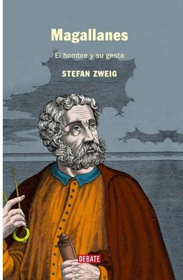

Magallanes: El hombre y su gesta
Reseña por Jorge I. Zuluaga

Ver reseña en GoodReads (necesita cuenta)
Se supone que es un ensayo sobre la gesta de Magallanes y los que lo acompañaron en la primera circunnavegación de la Tierra realizada por europeos, pero la genialidad de Stefan Zweig convierte este texto en una verdadera novela. Se ve que Zweig leyó todas las fuentes originales y muchas de las posteriores que estaban disponibles en su época y a partir de allí "interpolo" muchos de los vacíos de esta increíble historia. El resultado no puede ser mejor.
Comencé a leer este libro motivado por el lanzamiento en la plataforma de streaming de Amazon de la serie "Sin límites" que explota dramáticamente la expedición de Magallanes (¡se habían demorado!). Quería informarme lo mejor posible antes de ver la serie (que comencé unos días antes de escribir esta reseña; no la he terminado). Ya tenía el libro en mi biblioteca; lo encontré relativamente barato en una librería en línea y sabiendo que los textos de Zweig siempre se venden al mayor precio posible, ni corto, ni perezoso me lance sobre el volumen.
Magallanes: el hombre y su gesta, narra en código de novela, aunque en tercera persona, la historia del marino, soldado o geógrafo portugués Fernão de Magalhães, nacionalizado español como Hernando o Fernando de Magallanes, desde sus primeras aventuras en el índico y en la costa africana siendo muy joven y al servicio de la corona portuguesa, hasta su muerte, ya como almirante de la armada española, en una isla del archipiélago Filipino y en medio de la travesía de circunnavegación que inventó y sostuvo hasta su muerte contra todos los obstáculos posibles.
Esta es la historia principalmente de los obstáculos que enfrento Magallanes en su visionaria misión. Desde que la concibió a partir de los comentarios de viajeros y geógrafos de su época, pero principalmente de su juiciosa lectura de los archivos de navegación de la corona portuguesa, pasando por las dificultades políticas y económicas que tuvo que enfrentar, primero en la corte de Manuel de Portugal y después en la de Carlos I de Castilla (el emperador Carlos V), hasta las innumerables dificultades, físicas y humanas, del viaje por mar hasta el archipiélago de las Filipinas (donde en el único acto descuidado perdió su vida) y más allá, en la persona de los marinos que le sobrevivieron.
Había leído ya una versión novelada de estas historias en el libro "Bajo la cruz del Sur" de Patricia Cerda (aquí mi reseña) que recomiendo sin duda alguna leer, antes o después de la erudita versión de Zweig.
Ambas lecturas no solo me permitieron conocer en detalle la gesta de Magallanes y sus acompañantes, sino también entender las injusticias históricas que rodearon esta aventura.
Para empezar una precisión sobre quién fue realmente la primera persona que circunnavego la Tierra como parte de esta aventura. Una aclaración que hace Stefan Zweig, al que, debo aclarar, no siempre he considerado precisamente poco eurocentrista (en otros ensayos suyos no parece muy dado a reconocer la existencia de otros pueblos antes de los europeos).
Como lo aclara Zweig, técnicamente fue Enrique (este era su nombre castellano), el esclavo Maluco de Magallanes, el primer hombre en completar la vuelta al mundo.
Enrique había sido comprado por Magallanes (suena feísimo decir eso hoy en día) en uno de sus viajes previos a las Molucas, la isla de las especies, cuando se desempeñaba como marino o soldado de la corona portuguesa. Vivió con Magallanes en Portugal y España y lo acompaño en su viaje de circunnavegación al menos hasta el día en la que el navegante castellano portugués, encontró la muerte en una playa. Enrique estuvo incluso a punto de morir en la misma playa, bajo las mismas flechas y lanzas que le dieron muerte a Magallanes. Después de la muerte del almirante, Enrique traicionó a los españoles, abandonó la misión y se quedo en su tierra (tal vez como esclavo de otro gobernante local).
Fue entonces un habitante de las Molucas el primero en realizar el viaje de circunnavegación.
El segundo mito, este menos discutido por Zweig, aunque no falta en este ensayo la mirada crítica del autor sobre el tema, es el papel central que la historia oficial le ha dado a Juan Sebastian Elcano en la misión de circunnavegación. En algunas fuentes se habla incluso de "Expedición de Magallanes-Elcano". ¡Tremenda injusticia!.
Cada historia que leo sobre esta gesta me convence más de que Elcano fue un personaje terciario que la historia se encargo de destacar por dos circunstancias afortunadas, al menos para él. Por un lado, por haber sido el piloto designado por descarte, más no por mérito porque había otros más competentes hacia el final de la expedición, para el último tramo de la misma, es decir el viaje desde la isla de Tidore en el archipiélago de las Molucas hasta España. Por el otro lado, y está es mi hipótesis, Elcano fue "bendecido" por la historia, contada siempre por los que ganan, por ser justamente de origen Castellano.
No se le quita a Elcano sus habilidades como piloto, que fue precisamente la razón por la cual se enroló en la misión. Otra razón es que estaba escapando de un proceso jurídico, en pocas palabras, era un delincuente. Tampoco se le quita su tesón para dirigir el Trinidad a través del Índico y de Atlántico, cerca a las costas de África, sin desfallecer, ni entregarse cobardemente a los Portugueses que los perseguían desde hacía meses. Sin embargo, es un hecho bien conocido que su papel durante gran parte de la travesía fue realmente terciario (ni siquiera secundario). No debe olvidarse tampoco, como bien lo cuenta Zweig que Elcano estuvo entre los conjurados que casi logran evitar que la misión llegará a buen término cuando apenas se encontraban en las costas de Suramérica.
Si hay alguien en la expedición que para mi merece los más altos honores de la historia y que solo ahora creo los está recibiendo en ensayos como los de Zweig o en novelas como los de Preciado, es el italiano Antonio Pigaffeta, el cronista de la expedición. Si bien Pigaffeta no era un marino, ni un soldado (y tampoco era Castellano), sufrió las mismas penurias de todos durante el viaje y, como sucedió con Elcano, también alcanzó a completarlo exitosamente. Más allá de eso, es a Pigaffeta y su paciente labor de cronista, al que le debemos que hoy, casi 500 años después de la gesta de Magallanes, Enrique y compañía, conozcamos tantos detalles sobre la aventura y la vida de los implicados.
Esta es pues la historia de Magallanes, Enrique y Pigaffeta.
No hay párrafo malo con Stefan Zweig. Lean esta historia y vean la serie* pronto.
* Después de empezar a ver la serie me doy cuenta de que también allí se da un excesivo protagonismo a Elcano y ni siquiera se le da una voz a Enrique. Espero que no sea parte de un trasnochado chauvinismo de los productores españoles de la serie.